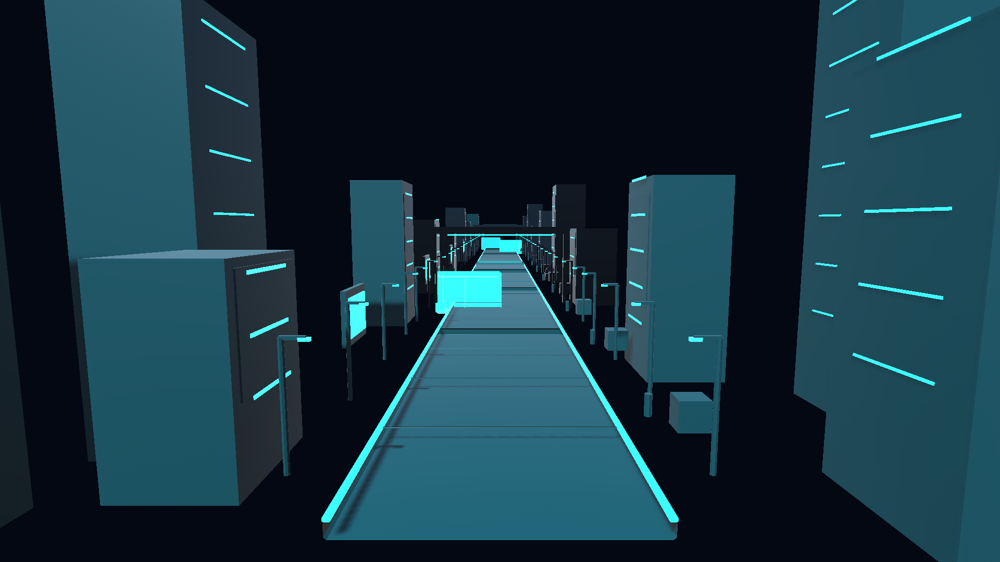

Unity · C# · Game development
Khoo
Kah Qin
I’m a Computer Science student building gameplay systems, VR experiences and real-time graphics.
Available for internships · 4 Jan–23 May 2027
Explore projects ↓
Selected work
About
I study Interactive Software Technology at Tunku Abdul Rahman University of Management and Technology. My projects range from a Unity game with motion controls to VR interaction, weather effects and an articulated OpenGL robot.
- Computer Science (Hons) · TAR UMT
- Jun 2025 – Expected Jun 2027 · CGPA 3.87/4.00
- IT Support Intern · Alpine Software
- Oct 2024 – Jan 2025 · Software updates, database backups and recovery, e-invoice setup and report design
- Diploma in Computer Science · TAR UMT
- Jun 2023 – May 2025 · CGPA 3.58/4.00
Skills
- Programming and graphics
- C#, C++, OpenGL, basic SQL
- Development tools
- Unity, Unity Particle System, Git
- Unity fundamentals
- Input System, Rigidbody and colliders, Animation, Timeline, NavMesh, ragdoll physics and shaders
Contact
I’m looking for a Game Developer Intern role with a focus on Unity.